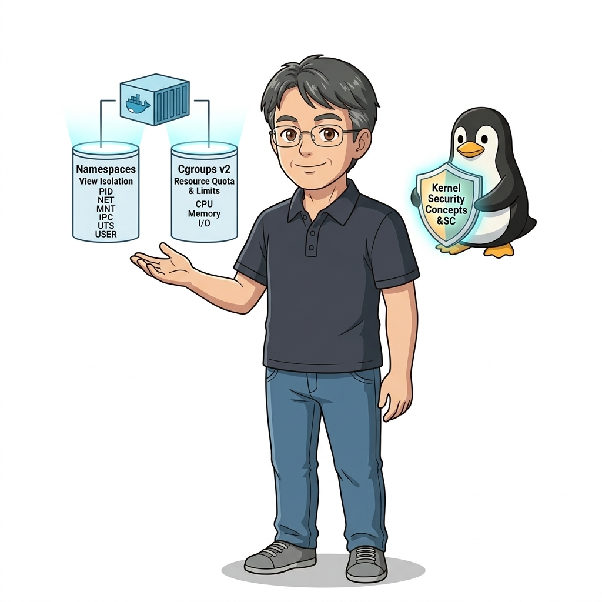
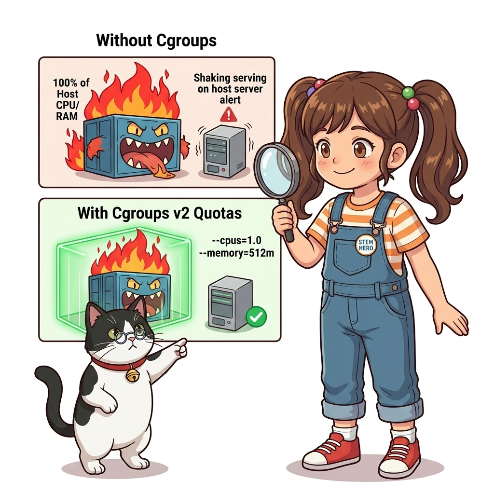
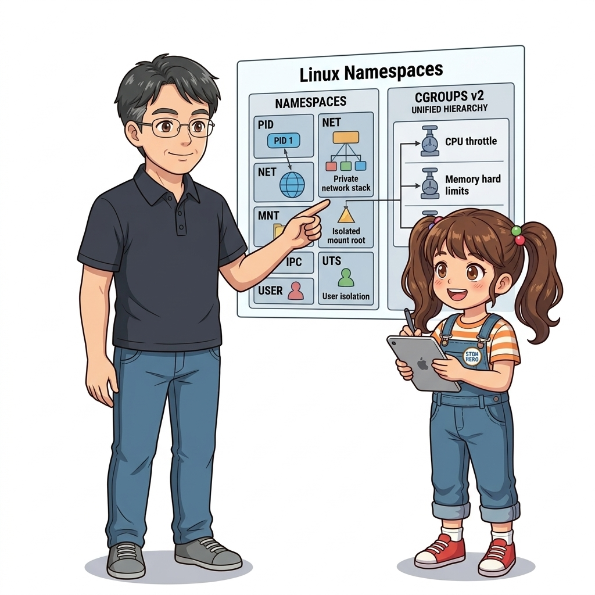
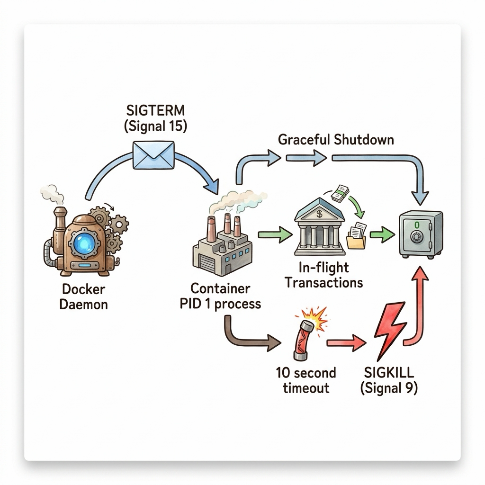
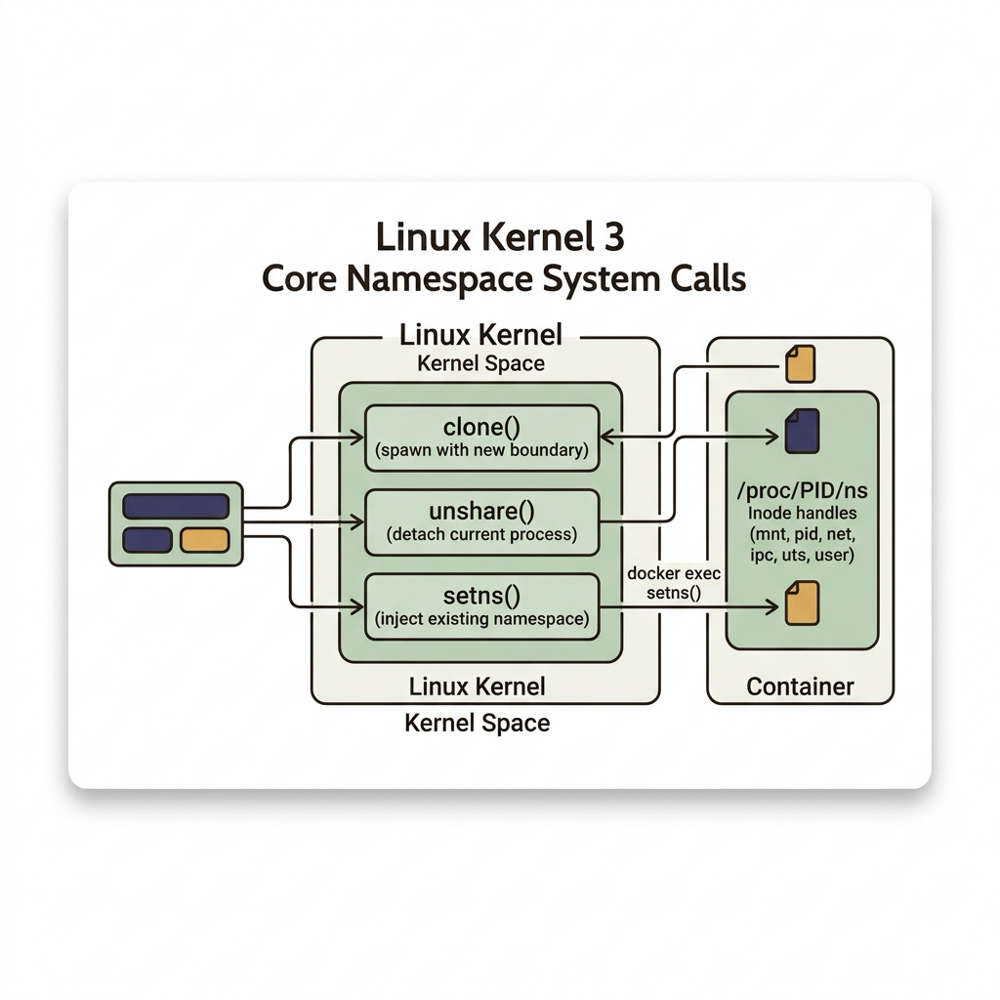
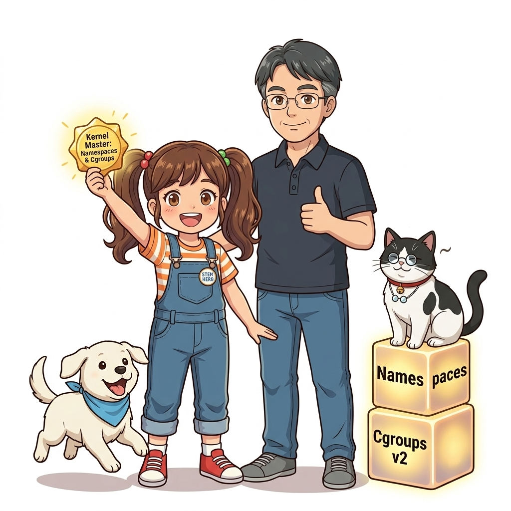

013. 리눅스 커널 격리 기술: 네임스페이스와 cgroups
수많은 사람들이 도커를 마치 마법사가 만들어낸 환상적인 신기술처럼 바라봅니다. 하지만 엄밀한 운영체제(OS) 공학의 관점에서 진실을 고백하자면, 리눅스 커널 내부에는 ‘컨테이너(Container)’라는 이름의 단일 개체나 물리적 실체가 존재하지 않습니다!

그림 01-14-1 ‘컨테이너’라는 환상을 만들어내는 리눅스 커널의 양대 기둥: 네임스페이스(보는 것의 격리)와 cgroups(쓰는 것의 제한)우리가 컨테이너라고 부르는 것의 정체는 사실 리눅스 커널이 제공하는 2개의 오래되고 강력한 네이티브 기능이 정교하게 결합된 평범한 리눅스 프로세스에 불과합니다:
- 네임스페이스 (Namespaces): 프로세스가 시스템을 바라보는 ‘시야(View)’를 제한하여 다른 프로세스를 보지 못하게 차단합니다.
- 컨트롤 그룹 (cgroups, Control Groups): 프로세스가 소비할 수 있는 하드웨어 ‘자원(Resource, CPU/RAM/Disk)’의 상한선을 칼같이 제한합니다.
이 두 가지 커널 기술을 이해하면, 도커의 모든 신비주의가 걷히고 진정한 시스템 엔지니어의 눈으로 컨테이너를 완벽하게 통제할 수 있게 됩니다.
013.1 리눅스 6대 네임스페이스: 프로세스에게 독방을 선물하다
리눅스 커널은 6가지 차원에서 프로세스에게 완벽한 독방(Namespace)을 선사합니다:

그림 01-14-2 PID, Network, Mount, IPC, UTS, User 6개 차원에서 프로세스의 시야를 완벽히 격리하는 네임스페이스 구조- PID Namespace (프로세스 ID):
- 호스트 머신에서 수천 번대 PID로 돌아가는 프로세스라도, 컨테이너 안에서는 마치 자기가 컴퓨터의 시조인 양
PID 1번으로 보입니다. 다른 컨테이너의 프로세스는 존재조차 알 수 없습니다.
- 호스트 머신에서 수천 번대 PID로 돌아가는 프로세스라도, 컨테이너 안에서는 마치 자기가 컴퓨터의 시조인 양
- NET Namespace (네트워크 스택):
- 독립된 가상 네트워크 인터페이스(
eth0), 고유 IP 주소, 독립된 포트 바인딩 테이블을 제공합니다.
- 독립된 가상 네트워크 인터페이스(
- MNT Namespace (파일시스템 마운트):
chroot를 현대적으로 확장한 기능으로, 호스트의 디스크 경로를 숨기고 컨테이너만의 독립된 루트 디렉터리(/) 마운트 트리를 제공합니다.
- IPC Namespace (프로세스 간 통신):
- 공유 메모리(Shared Memory)와 메시지 큐(Message Queue)를 격리하여 다른 컨테이너와의 메모리 침범을 차단합니다.
- UTS Namespace (호스트명 및 도메인):
- 컨테이너마다 호스트 시스템과 무관한 고유한 컴퓨터 이름(Hostname)을 가질 수 있게 합니다.
- USER Namespace (사용자 계정):
- 컨테이너 내부에서는 전지전능한
root(UID 0)권한을 행사하지만, 호스트 커널의 눈에는 평범한 일반 사용자(UID 10001등)로 맵핑하여 치명적인 호스트 탈취 해킹을 방지합니다.
- 컨테이너 내부에서는 전지전능한
013.2 cgroups (Control Groups): 자원 먹는 괴물을 길들이는 족쇄
만약 네임스페이스만 존재한다면 어떻게 될까요? 한 컨테이너 내부의 파이썬 코드가 무한 루프를 돌며 CPU를 100% 태우거나, 메모리를 수십 기가바이트씩 할당해 버리면 호스트 서버 전체의 램이 고갈되어 리눅스 커널의 OOM Killer가 다른 정상 컨테이너들을 무차별 학살하게 됩니다.

그림 01-14-3 cgroups v2를 통해 컨테이너 프로세스의 CPU 시간(Quota)과 메모리 상한선(Limit)을 칼같이 제어하는 하드웨어 족쇄이를 방지하는 것이 cgroups입니다:
- CPU 제한 (
--cpus="1.5"): 커널의 완전 공정 스케줄러(CFS) 주기(Period) 동안 프로세스가 사용할 수 있는 CPU 시간(Quota)의 상한선을 강제합니다. - 메모리 제한 (
-m 512m): 프로세스가 512MB 이상의 메모리를 쓰려고 하면 추가 할당을 즉시 차단하고, 한계를 넘는 순간 해당 컨테이너만 안전하게 OOM 종료시킵니다. - 블록 I/O 제한 (
--blkio-weight): 특정 컨테이너가 하드디스크 디스크 읽기/쓰기를 독점하지 못하도록 I/O 대역폭을 공평하게 분배합니다.
📊 Namespaces vs Control Groups (cgroups) 역할 대조표
| 비교 항목 | 리눅스 네임스페이스 (Namespaces) | 리눅스 컨트롤 그룹 (cgroups) |
|---|---|---|
| 핵심 목적 | “무엇을 볼 수 있는가?” (시야의 격리) | “얼마나 쓸 수 있는가?” (자원의 제한) |
| 격리 대상 | 프로세스 트리(PID), 네트워크(IP/Port), 마운트(/), 호스트명 | CPU 연산 시간, 물리 메모리(RAM), 디스크 I/O 속도 |
| 부재 시 발생하는 장애 | 다른 프로세스 염탐, 포트 충돌, 파일 오염 | 자원 고갈로 인한 호스트 서버 전체 다운 (Noisy Neighbor) |
| 관련 커널 시스템 콜 / 경로 | clone(), unshare(), setns() |
/sys/fs/cgroup/ (가상 파일시스템 인터페이스) |
013.3 선언적 실습 및 아키텍처 다이어그램
메모리를 100MB로 엄격히 제한한 컨테이너를 실행하고, 리눅스 커널의 /sys/fs/cgroup 가상 파일시스템에 기록된 실제 자원 한계치를 직접 확인해 봅시다.
# [실습 013-1] 메모리를 100MB로 엄격히 제한(-m 100m)하여 컨테이너 실행
docker container run -d --name cgroup-demo -m 100m --cpus="0.5" alpine:3.20 sleep 3600
# [실습 013-2] 컨테이너 내부 네임스페이스에서 메모리 제한 확인
docker container exec cgroup-demo cat /sys/fs/cgroup/memory.max 2>/dev/null || docker container exec cgroup-demo cat /sys/fs/cgroup/memory/memory.limit_in_bytes
# [실습 013-3] docker inspect로 설정된 리소스 한도 JSON 검증
docker container inspect cgroup-demo --format 'Memory: {{.HostConfig.Memory}} bytes, NanoCPUs: {{.HostConfig.NanoCPUs}}'
# [실습 013-4] 실시간 자원 사용량 모니터링
docker stats --no-stream cgroup-demo
# [실습 013-5] 실습 컨테이너 정리
docker container rm -f cgroup-demo
🔍 리눅스 커널 내부의 네임스페이스와 cgroups 결합도 (Mermaid Diagram)
flowchart TD
Kernel["🐧 리눅스 커널 (Linux Kernel)"]
subgraph Namespaces["격리 장벽 (6대 Namespaces)"]
PID["PID: 독립 번호 체계"]
NET["NET: 독자 가상 IP"]
MNT["MNT: 독자 루트 /"]
end
subgraph CGroups["자원 족쇄 (cgroups v2)"]
CPU["CPU: 최대 0.5 코어"]
MEM["RAM: 최대 100MB"]
end
Kernel --> Namespaces
Kernel --> CGroups
Namespaces & CGroups --> ContainerProcess["📦 격리된 애플리케이션 프로세스 (Container)"]
그림 01-14-4 cgroups를 통해 100MB 메모리 상한선이 정확히 주입되어 커널에 기록된 실시간 검증
013.B 📚 도커 바이블 심화: PID 1 네임스페이스의 특권과 리눅스 시그널(SIGTERM vs SIGKILL) 처리 원리
출처 도서: 『Docker Up and Running』 핵심 분석
도커 컨테이너에서 가장 흔하게 발생하는 ‘컨테이너 종료 지연(10초 딜레이 후 강제 종료)’ 문제는 리눅스 커널의 PID 1 시그널 처리 규격에서 비롯됩니다.
- 리눅스 커널의 PID 1 보호 메커니즘:
- 일반 프로세스(PID > 1)는 시그널 핸들러를 등록하지 않아도 기본 핸들러(Default Action)에 의해 SIGTERM 수신 시 즉시 종료됩니다.
- 하지만 PID 1(init 프로세스)은 커널이 시스템 붕괴를 막기 위해 특별 보호하므로, 프로세스가 명시적으로 핸들러를 등록하지 않은 모든 시그널(SIGTERM 포함)을 커널 차원에서 완전히 무시합니다.
- 도커의 종료 라이프사이클:
docker stop실행 시 도커 데몬은 PID 1 프로세스에 먼저SIGTERM (15)을 전송합니다.- 애플리케이션(예: Node.js, Python 스크립트)이 이를 직접 수신하여 처리하지 않으면 신호가 씹히게 됩니다.
- 도커는 기본 유예 시간(10초) 동안 대기하다가, 프로세스가 반응이 없으면 무자비한
SIGKILL (9)을 전송하여 프로세스를 강제 사살합니다.

그림 013-B-1 도커 데몬의 SIGTERM 신호를 PID 1이 수신하여 우아하게 정리하고 정상 종료하는 흐름도# [실습] SIGTERM을 무시하는 나쁜 스크립트 vs 우아한 종료 핸들러 비교
# 우아한 종료를 처리하는 Python 시그널 핸들러 패턴
cat << 'EOF' > graceful.py
import signal, time, sys
def handler(signum, frame):
print("SIGTERM 수신 완료! 진행 중인 DB 트랜잭션 안전 종료 중...")
time.sleep(1)
print("정상 종료 완료 (Exit 0)")
sys.exit(0)
signal.signal(signal.SIGTERM, handler)
print("애플리케이션 가동 중 (PID: 1)...")
while True:
time.sleep(1)
EOF
👨🏫 이호진 교수님의 바이블 멘토링 노트: “docker stop을 쳤을 때 딱 10초 뒤에 꺼진다면, 여러분의 애플리케이션은 정상 종료된 것이 아니라 강제 살해당하고 데이터가 유실되었을 위험이 큽니다. 반드시 SIGTERM 핸들러를 등록하세요.”
👧 도로시의 깨달음: “10초 동안 아무 응답이 없어서 도커가 마지막 수단으로 강제 종료 펀치를 날리는 거였군요!”
🐱 조교 지니의 아키텍처 체크포인트: “Go 언어나 C로 짠 앱이 아니라면, Node.js나 Python에서는 가급적
tini같은 전문 init 프로세스를 PID 1로 세우는 것이 안전합니다.”
013.C 📚 도커 바이블 심화: 리눅스 커널 3대 네임스페이스 시스템 콜(clone, unshare, setns)과 /proc/PID/ns 해부
출처 및 학술적 배경: 『Docker Up and Running』 제3장 (리눅스 커널 격리) & 『제대로 배우는 도커』 제13장 (13.3 컨테이너와 네임스페이스)
핵심 주제: 컨테이너 런타임(runc)이 호출하는 리눅스 커널 3대 시스템 콜(clone,unshare,setns), 커널 Inode 기반의/proc/<pid>/ns/가상 파일시스템 구조.
1. 컨테이너를 탄생시키는 3대 시스템 콜
도커는 마법이 아닙니다. 도커가 컨테이너를 만들고, 제어하고, 내부로 침투할 때 사용하는 실체는 리눅스 커널이 제공하는 단 3가지의 C 시스템 콜 함수입니다:
| 시스템 콜 | 커널 동작 메커니즘 | 도커 CLI 대응 명령어 및 역할 |
|---|---|---|
clone(2) |
새로운 자식 프로세스를 생성(fork)할 때 CLONE_NEW* 비트마스크 플래그를 조합하여 생성 즉시 완전히 독립된 네임스페이스에 가둠 |
docker container run(새로운 컨테이너 프로세스 탄생) |
unshare(2) |
이미 실행 중인 프로세스가 부모나 형제 프로세스와 공유하던 네임스페이스와의 연결을 끊고, 자신만의 새로운 독자 네임스페이스를 생성 | 컨테이너 런타임 초기화 과정에서 루트 격리 |
setns(2) |
실행 중인 프로세스가 다른 타깃 프로세스의 네임스페이스 파일 디스크립터(/proc/<pid>/ns/*)를 인자로 받아 그 네임스페이스 안으로 침투 |
docker container exec(실행 중인 컨테이너 내부 셸 진입) |
2. /proc/<pid>/ns/ 커널 가상 파일시스템의 Inode 비밀
리눅스 커널은 각 프로세스가 속한 네임스페이스를 가상 심볼릭 링크 형태로 /proc/<pid>/ns/ 디렉터리에 노출합니다:
cgroup: cgroups 네임스페이스 Inodeipc: System V IPC 및 POSIX 메시지 큐 Inodemnt: 파일시스템 마운트 포인트 Inodenet: 네트워크 디바이스 및 라우팅 테이블 Inodepid: 프로세스 ID 번호 공간 Inodeuser: UID/GID 사용자 매핑 Inodeuts: 호스트명 및 도메인명 Inode- 검증 원리: 두 프로세스의
net:[4026531992]Inode 번호가 동일하면 같은 네트워크 공간을 쓰고 있는 것이며, 번호가 다르면 완벽히 격리된 독립 네트워크에 존재하는 것입니다.

그림 013-B-2 리눅스 커널 3대 네임스페이스 시스템 콜과 proc Inode 추적 구조도# [실습] 호스트와 컨테이너의 네임스페이스 Inode 직접 비교
# 1. 컨테이너 백그라운드 기동
docker container run -d --name ns-tracer alpine sleep 3600
# 2. 컨테이너의 호스트 PID 추출
CPID=$(docker container inspect ns-tracer --format '{{.State.Pid}}')
# 3. 호스트 터미널(PID $$)과 컨테이너(CPID)의 네임스페이스 Inode 비교
echo "=== 호스트 쉘의 네임스페이스 ==="
ls -l /proc/$$/ns/ | grep -E "pid|net|mnt"
echo "=== 컨테이너 프로세스의 네임스페이스 ==="
ls -l /proc/$CPID/ns/ | grep -E "pid|net|mnt"
# (두 출력의 Inode 번호가 완전히 다름을 확인 -> 완벽한 커널 격리 증명!)
# 4. 정리
docker container rm -f ns-tracer
👨🏫 이호진 교수님의 바이블 멘토링 노트: “
docker exec를 실행했을 때 어떻게 실행 중인 컨테이너 안으로 들어가는지 그 마법의 실체가 바로setns(2)시스템 콜입니다. 커널 레벨에서 네임스페이스 Inode를 갈아 끼우는 시스템 콜의 원리를 이해하면 리눅스 시스템 엔지니어링의 시야가 완전히 달라집니다.”👧 도로시의 깨달음: “도커가 새로운 소프트웨어를 만든 게 아니라, 리눅스 커널에 원래 있던 세 가지 열쇠(
clone,unshare,setns)를 기가 막히게 잘 다루는 장인이었던 거군요!”🐱 조교 지니의 아키텍처 체크포인트:
- 쿠버네티스의 파드(Pod) 내부 컨테이너들이 같은 IP를 공유하는 원리도, Pod 생성 시 Pause 컨테이너가 먼저
clone()으로 Network 네임스페이스를 만들고, 나머지 앱 컨테이너들이setns()로 동일한netInode에 합류하기 때문입니다.
013.4 핵심 정리: 캐릭터 대화와 3대 교훈
👧 도로시: “세상에! ‘도커 컨테이너’라는 외계 기술이 따로 있는 게 아니라, 리눅스 커널이 원래 가지고 있던 ‘네임스페이스 안경’으로 다른 방을 못 보게 가리고, ‘cgroups 줄자’로 밥(자원)을 딱 정해진 만큼만 주는 원리였군요!”
🐱 조교 지니: “야옹~ 바로 그것이 핵심입니다! 도커는 단지 이 복잡하고 어려운 커널 시스템 콜들을 누구나 명령어 한 줄로 다룰 수 있게 아주 쓰기 편한 리모컨을 만들어 준 것이지요!”
🐶 토토: “멍멍! 100MB 족쇄를 채워두면 컨테이너가 제아무리 장난을 쳐도 다른 친구들은 안전하게 보호받는대요!”
👨🏫 이호진 교수님: “완벽한 이해란다. 이 커널 격리 원리를 깊이 알고 있는 엔지니어만이, 프로덕션에서 발생하는 난해한 컨테이너 성능 병목과 보안 침해를 근본적으로 해결할 수 있단다.”

그림 01-14-5 리눅스 커널 격리 기술의 3대 핵심 엔지니어링 교훈- 시야의 격리 (Namespaces):
- PID, NET, MNT를 분할하여 프로세스 간 상호 간섭과 보안 침해를 논리적으로 원천 차단합니다.
- 자원의 통제 (cgroups):
- CPU, 메모리, I/O의 물리적 상한선을 명시하여 단일 서비스 장애가 시스템 전체로 전파되는 것을 방지합니다.
- 도커의 본질적인 정체성:
- 가상머신과 같은 무거운 하드웨어 복제가 아니라, 고도로 정밀하게 격리된 ‘네이티브 리눅스 프로세스’임을 인지합니다.
013.5 랩노트 피날레와 다음 강의 예고
그림 01-14-6 Part 01의 모든 지식을 총동원하여 캡스톤 실전 미션에 도전하는 교수님과 연구팀
💡 다음 강의 안내: 014. Part 01 실전 미션: 컨테이너 파일시스템 탐색과 커스텀 웹 서버에서는 000강부터 013강까지 배운 모든 도커 기본기와 커널 원리를 총동원하여, 격리된 파일시스템을 탐색하고 나만의 멋진 커스텀 웹 서비스를 띄워보는 Part 01 대단원 최종 종합 캡스톤 미션을 수행합니다!
🧭 강의 네비게이션
- ◀️ 이전 강의: 012_도커엔진_내부아키텍처_CLI_데몬_containerd_runc
- 📋 Part 01. 컨테이너 혁명과 도커 엔진 기본기 마스터 (000 ~ 014) 목차로 돌아가기
- ▶️ 다음 강의: 014_Part01_실전미션_컨테이너파일시스템_탐색과_커스텀웹서버